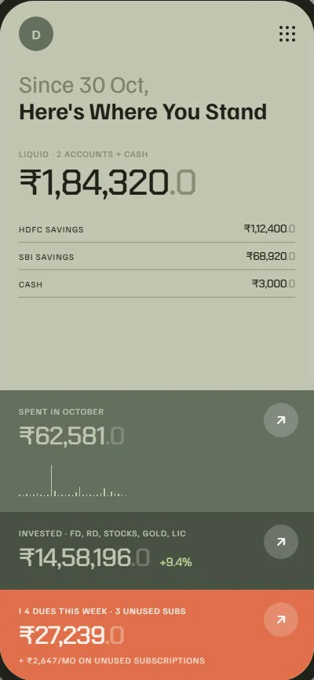
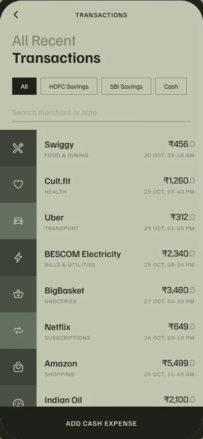
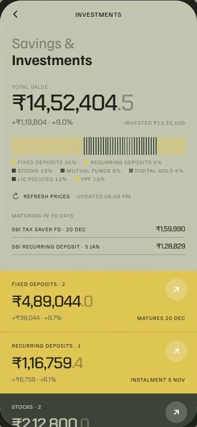
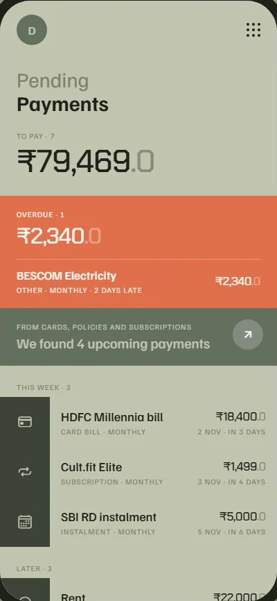
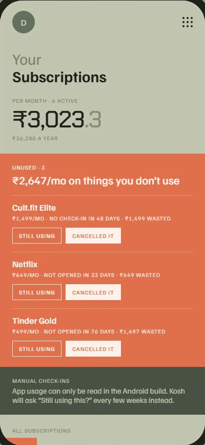
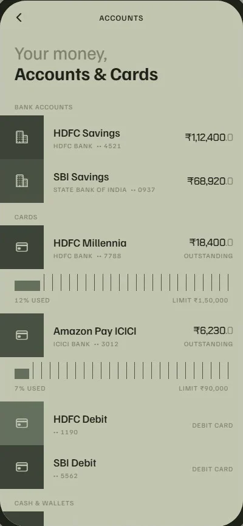
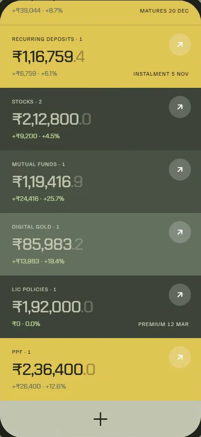

Your money, kept.
Kosh reads the SMS your bank already sends you and turns them into a clear record of what you spend, save and owe. It runs entirely on your Android phone. No account, no server, no ads.

Spent in October
₹62,581.0
Invested · FD, RD, stocks, gold, LIC
₹14,58,196.0
On subscriptions you don’t open
₹2,647.0/mo
One app, five screens that matter.
Spending, savings, dues and subscriptions, each on a single flat page. Numbers first. Nothing to set up beyond your accounts.

Transactions 
Investments 
Pending 
Subscriptions 
Accounts
Demo · 78 seconds
Watch it work first.
A walk through the home screen, transactions, investments, subscriptions, pending payments and accounts, using sample data.
01 / 05
Your bank already texts you. Kosh reads it.
Kosh goes through the debit and card SMS in your inbox and picks out the amount, the merchant, the account and the date, and files it under a category. Parsing happens on the phone. Messages that aren’t transactions are ignored.
Paid in cash? Add it by hand in a few taps.
- SourcesBank and card SMS in your inbox
- DuplicatesSkipped, so re-syncing is safe
- CategoriesFood, transport, bills and more, editable
02 / 05
Savings and investments, worked out properly.
FDs and RDs grow with bank-style quarterly compounding, so the value you see today and at maturity matches your passbook. Stocks, mutual funds and digital gold refresh their prices when you ask. LIC premiums and PPF sit alongside.
- Fixed and recurring depositsInterest, maturity date, next instalment
- Stocks, mutual funds, goldLive price, gain or loss
- LIC and PPFPremiums and balance in one list

03 / 05
Pay on time, without remembering.
Card bills, rent, insurance premiums and RD instalments go into one list, sorted by when they’re due. Kosh suggests upcoming payments from your cards, policies and subscriptions, so most of the list fills itself.
You get a reminder two days before and on the due date. Every few days, at a random time, Kosh also nudges you to open it and check in. Nothing more.
- Reminders2 days before and on the day, 9 am
- OverdueShown in orange until you mark it paid
04 / 05
The gym you stopped going to. The app you never open.
₹2,647.0/mo
Link a subscription to its app, say Netflix or a dating app, and Kosh checks whether you’ve opened it. Not used in 30 days? It’s flagged, with the money spent since. For things without an app, like a gym, Kosh asks you now and then whether you still use it.
- NeedsUsage access, only for apps you link
- WeeklyA short digest of what went unused
05 / 05
Locked with your fingerprint or face.
Kosh opens only after your fingerprint, face or device PIN. There’s no account and no password to forget or leak.
- Fingerprint
- Face unlock
- Device PIN or pattern
Privacy
Your data never leaves your phone.
Read on the phone
SMS are parsed on your device. The text is never uploaded anywhere.
Stored on the phone
Everything sits in a local database in Kosh’s private storage. There is no Kosh server.
No account, no tracking
No sign-up, no ads, no analytics, no third-party SDKs watching what you do.
Open source
MIT licensed. Read every line, build it yourself, or fork it.
Kosh goes online for only two things: optional price lookups for stocks, mutual funds and gold (Yahoo Finance and mfapi.in, sent only the symbol or scheme code), and crash reports, only if whoever built your copy turned them on. Backups are a file you export and keep where you like. Read the privacy policy.
Four steps, about five minutes.
- 01
Download the APK
Get the latest APK from the project’s GitHub Releases page, on your phone.
- 02
Install it
Allow your browser or Files app to install unknown apps. On Android 13 and later, open Kosh’s App info, tap the ⋮ menu and choose Allow restricted settings so it can read SMS.
- 03
Open Kosh, turn on the lock
Grant SMS access, then switch on the fingerprint, face or PIN lock.
- 04
Add your accounts
Add your bank accounts and cards. Kosh matches incoming SMS to them and starts logging.
Questions, answered.
Why isn’t Kosh on the Play Store?
Google Play only lets a few kinds of apps, such as your default SMS app, read your messages. Reading bank SMS is the core of Kosh, so it’s shared as an APK on GitHub instead. You can check the code and build the same APK yourself.
Does it work on iPhone?
No. iOS doesn’t let apps read your SMS inbox, so Kosh is Android only.
Is it free?
Yes. Kosh is open source under the MIT licence. There’s no paid tier, no ads and nothing to subscribe to.
What data does Kosh store, and where?
Your accounts, cards, transactions (including the text of the bank SMS each one came from), investments, pending payments and subscriptions. All of it is kept in a local database inside Kosh’s private storage on your phone. Nobody else, including the people who make Kosh, receives any of it.
What happens if I lose my phone?
Without a backup, your Kosh data is gone with it. There’s no cloud copy and no sync between devices. Use Settings → Export backup now and then and keep the file somewhere safe, such as Google Drive or a computer. On a new phone, use Restore from backup. The backup is a plain JSON file, so store it as carefully as a bank statement.
Which banks does it understand?
Kosh handles the common SMS formats used by Indian banks and card issuers for debits, credits and card spends. If a message from your bank is missed, open an issue on GitHub with the amounts and account numbers removed.
How do I delete everything?
Use Settings → Erase all data, or just uninstall the app. Either removes everything Kosh stored.